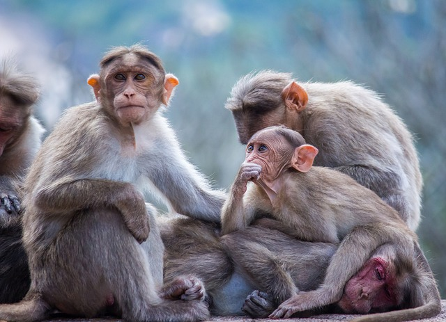

여행리스트
- 2024.01.15-19 - 후쿠오카
- 2024.07.08 - 가평
- 2024.07.15-17 - 제주도
- 2025.02.05-07 - 구마모토
- 2025.03.10-12 - 오사카
개빡센 대장정
4박 5일로 생각보다 길게 다녀왔다.
일정도 열심히 짜고.. 최민서는 애들 참여안한다고 발광함 안하긴했어~
근데 진짜 알차게 하긴함.. 하루하루가 도전이고 고난이고 체력의 한계였지만 실용적이었음
이라고 말하고 생각해보니까 계획하고 틀어진거 개많았넹

힘들었어서 그런지 기억이 투명도 70정도로 흐릿함..
다니면서도 이게 기억에 남나.. 했는데 남긴해!